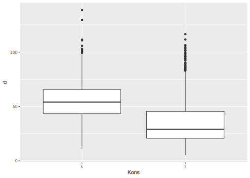
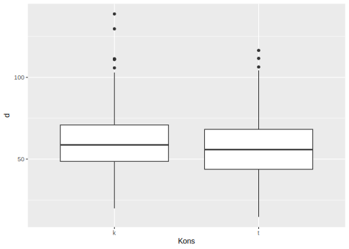
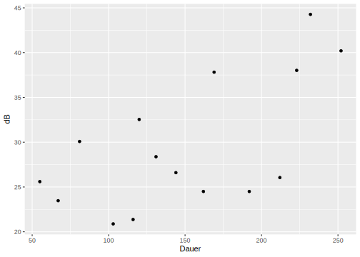
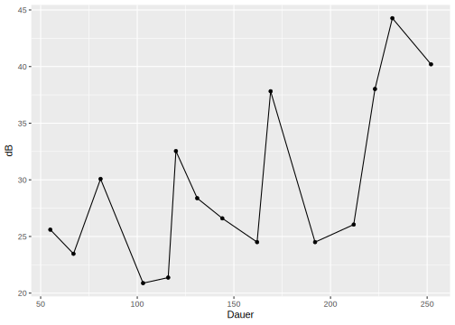
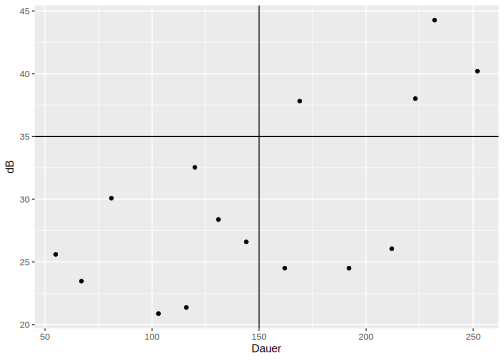
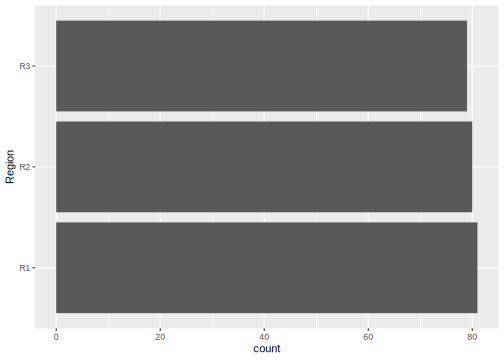
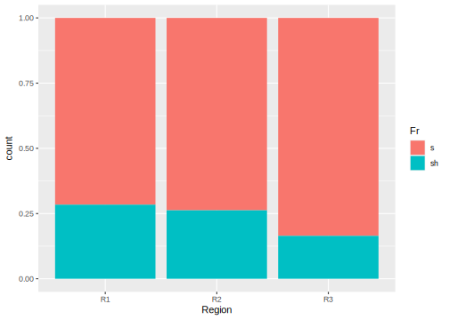
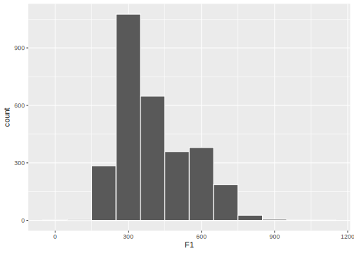

7 Plotting Data with ggplot2
In this chapter you’ll need the following packages and data frames:
library(tidyverse)
library(magrittr)
url <- "http://www.phonetik.uni-muenchen.de/~jmh/lehre/Rdf"
asp <- read.table(file.path(url, "asp.txt"))
int <- read.table(file.path(url, "intdauer.txt"))
coronal <- read.table(file.path(url, "coronal.txt"))
vdata <- read.table(file.path(url, "vdata.txt"))ggplot2 is a library from the tidyverse that gives you very many possibilities to visualise your data. gg stands for grammar of graphics. The command with which you start to build a plot is ggplot() and its argument is the data frame that contains the data to be plotted. Then you add the so called aesthetic mappings with aes() as well as functions for the type of the plot, the labels, legend, etc. Every function is connected through + (not with pipes!).
7.1 Boxplots
Boxplots are some of the most useful visualisations in research and science. In R they are created with the command geom_boxplot(). First, we’ll show how the boxplot in chapter ?? was created. The function ggplot() receives the data frame vdata. In aes() we state that F1 shall be plotted on the y-axis. And finally, we use geom_boxplot() to indicate that we want this to be a boxplot.

Boxplots are great for comparing values across categorical groups. These groups are commonly plotted on the x-axis. Here is an example for the duration of distinct consonants in the data frame asp:

Boxplots can also be visualised horizontally (although this is less common). In this case we would put the categories on the y-axis and the values on the x-axis:

Sometimes, the boxplot is supposed to have a notch. Simply set the argument notch = TRUE in geom_boxplot() (and, if you like, notchwidth to adapt the width of the notch):


Further Information: Aesthetic mappings & Piping Data Frames
Strictly speaking, the aesthetic mappings are an argument of the function that determines the type of the plot (e.g. of geom_boxplot()). Later on, you’ll see that some plotting functions allow or need certain arguments that are not permitted by others. In most cases, we extract the aes() function from the plot-type function because it is more legible. However, you are free to include the aesthetic mappings in the plot-type function as an argument:

Within a ggplot() all functions are connected with a plus sign. The data frame, however, can the piped onto ggplot() if you want:

This can be very useful if you want to apply several functions to a data frame before plotting it. For instance, here we filter the data frame asp for observations with lexical stress before then plotting the duration of only the stressed words:

7.2 Scatter- & Lineplots
Scatter plots are created using the functions geom_point() and/or geom_line(). These two functions can also be used together. Scatter plots usually have numeric-continuous data on their x- and y-axes. Here is a plot of the volume in decibel against the duration in milliseconds:



Sometimes it is helpful to include reference lines in a plot. Horizontal lines are created with geom_hline(), vertical ones with geom_vline(). To draw a horizontal line, you have to tell the plot where this line is supposed to meet the y-axis. This is why geom_hline() always needs the argument yintercept. For geom_vline(), xintercept is the point at which a vertical line and the x-axis meet. Let’s add two straight lines to the plot from before:
ggplot(int) +
aes(x = Dauer, y = dB) +
geom_point() +
geom_vline(xintercept = 150) +
geom_hline(yintercept = 35)
7.3 Barplots
Another important type of plot is the barplot which is created using geom_bar(). You can only use x or y in the aesthetic mappings because the opposite axis always shows a count or a proportion which is kindly computed by ggplot. The following plot shows, for example, how many occurrences there are of the three regions in the data frame coronal:

The bars can also be plotted horizontally by using y instead of x in the aesthetic mappings.

You can easily comprehend the plotted counts here by means of the table() function:
##
## R1 R2 R3
## 81 80 79A barplot can also contain another categorical variable. The second variable to be plotted is given to the argument fill which represents the levels of that variable as fillers. In the next chapter you’ll learn how to choose these colours yourself. In the following plot, you can see how often the fricatives Fr “s” (red) and “sh” (blue) were produced in each of the three regions:

Let’s try to use summarise() and group_by() to comprehend how this plot came about. We group by region and fricative and then let the function n() within summarise() determine the number of observations in the data frame for each combination of the two variables.
## `summarise()` has grouped output by 'Region'. You can
## override using the `.groups` argument.## # A tibble: 6 × 3
## # Groups: Region [3]
## Region Fr count
## <chr> <chr> <int>
## 1 R1 s 58
## 2 R1 sh 23
## 3 R2 s 59
## 4 R2 sh 21
## 5 R3 s 66
## 6 R3 sh 13A further argument of geom_bar() is position…
# ...to plot proportions instead of an absolute count:
ggplot(coronal) +
aes(x = Region, fill = Fr) +
geom_bar(position = "fill")
# ...to plot the bars next to each other:
ggplot(coronal) +
aes(x = Region, fill = Fr) +
geom_bar(position = "dodge")
7.4 Histograms & Probability Density
Histograms show the distribution of numeric-continuous data by dividing the range of values into many little sections. Similarly to the barplot, the bars (called bins here), show how many data points are within a range of values. In ggplot, histograms are created with geom_histogram(). The aesthetic mappings argument x determines which column from the data frame is plotted. Here is a histogram of F1 values in vdata:
## `stat_bin()` using `bins = 30`. Pick better value with
## `binwidth`.
In order to be able to visually differentiate the bins, let’s give them a white border. This is achieved by means of the argument color = "white" in geom_histogram():
## `stat_bin()` using `bins = 30`. Pick better value with
## `binwidth`.
We can also determine ourselves how wide the bins are supposed to be, with the argument binwidth. Currently, one bin in our plot has a width of about 40 Hz. The following plot shows the same data as before, but with bins that have a width of 10 Hz or 100 Hz, respectively:


You can see that this makes a huge difference in representing the data – so please choose carefully when you change the binwidth in a histogram.
The probability density is related to the histogram. The only change we need to make to turn our histogram into a probability density is to set the argument y = ..density.. in aes(). This changes the y-axis in such a way that we see the probability density instead of the count of data points. The area of the bins of a probability density plot is by definition always 1.
## Warning: The dot-dot notation (`..density..`) was deprecated in
## ggplot2 3.4.0.
## ℹ Please use `after_stat(density)` instead.
## This warning is displayed once every 8 hours.
## Call `lifecycle::last_lifecycle_warnings()` to see
## where this warning was generated.
The probability density is computed as count / (n * binwidth) where n is the number of data points. In the histogram above with binwidth = 100 there are 285 data points (count) in the bin between 150 Hz and 250 Hz. The probability density for this bin is computed as follows:
## [1] 0.0009557This value dens is the same as the density value for the same bin in our probability density plot.
The area of this bin is computed as binwidth * binheight, thus:
## [1] 0.09557If you sum the area of all bins in this plot, you will find that the total area is 1.
Now imagine a probability density plot consisting of infinitely many bins (which would accordingly have to be infinitely narrow). Then these are not distinct bins anymore, but instead a continuous function called probability density function. There is a function for this in ggplot2, too, called geom_density().

Just like in the probability density histogram, the integral (i.e. the area) under this density curve is 1.
Further Information: Histograms and Probability Density
For further information, consult Wilke’s Fundamentals of Data Visualization in R, chapter 7.